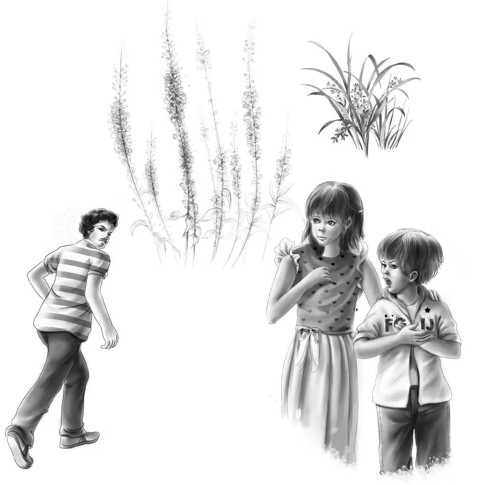
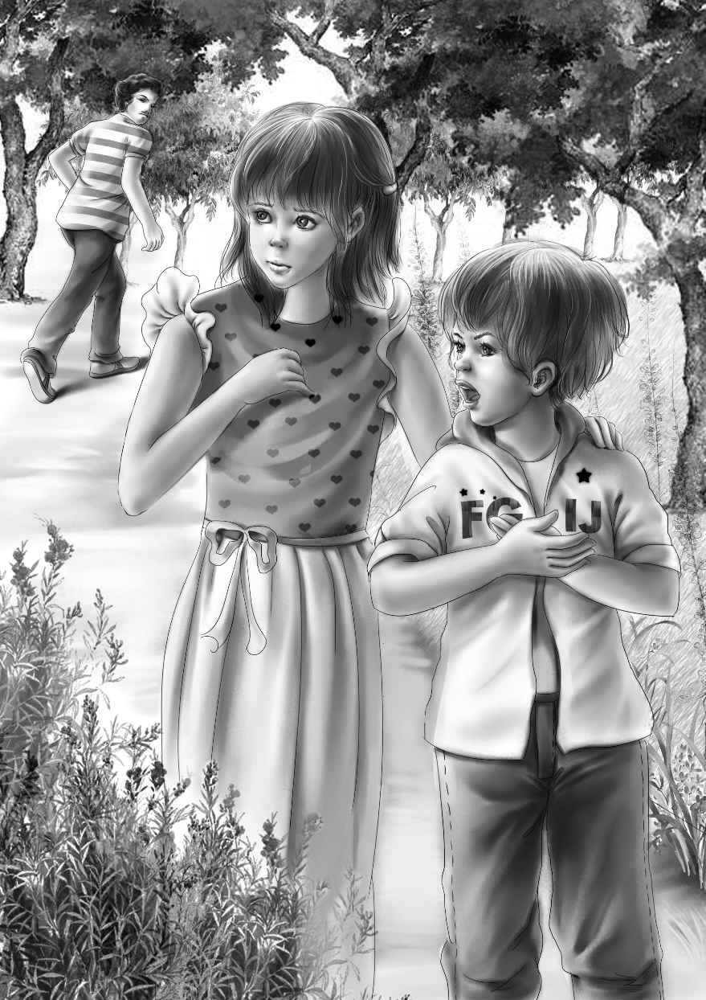
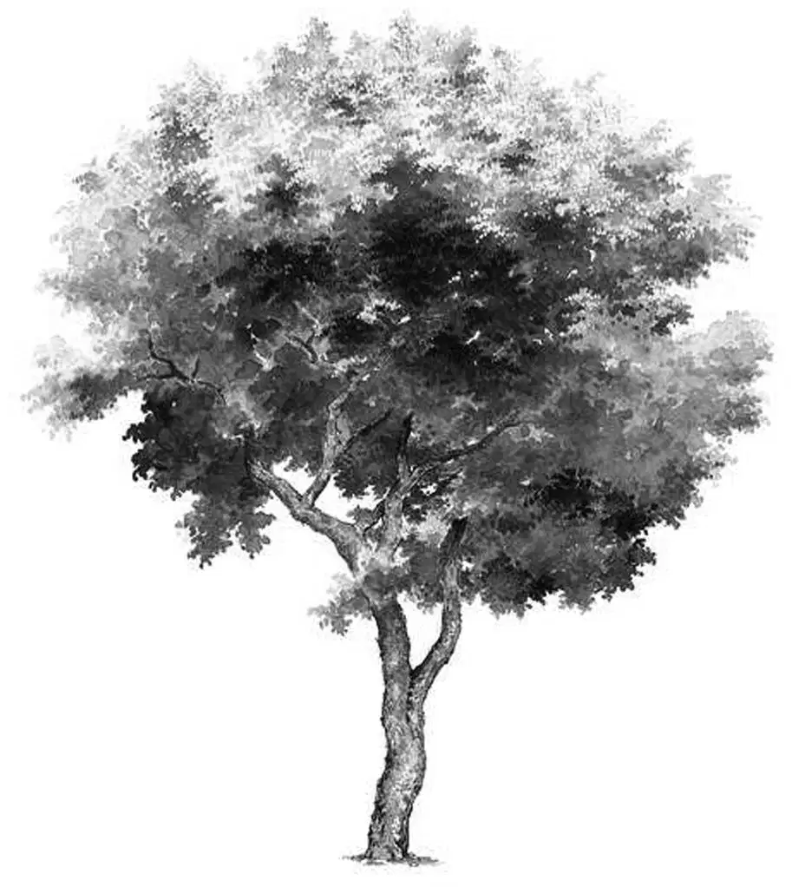

Unfriendly Characters

望望一直是睡在杰西床边的。
“安静一点，望望！”杰西说，“你会把大家都吵醒的！”
可望望并没有停，反而叫得更大声，连颈毛都竖了起来。
班尼闻声下楼，亨利也跟了下来。奥登先生则大声问道：“杰西，望望怎么了？”
“我也不知道，爷爷，”杰西回答，“它肯定是听到了一些异常的动静。”
班尼轻轻抚摸着望望：“你怎么了，望望？为什么在半夜12点这么大声地叫唤？要是下午四点再叫多好，那我们就有精神去探个究竟了。”
可望望仍叫个不停，它稍作停歇，便开始低声怒吼起来。
班尼突然说道：“我闻到了牛排和土豆泥的味道。”
“班尼，土豆泥没有气味。”维莉解释道。
“我能闻到。”班尼坚持说。
“你确定不是烤土豆的味道么？”亨利问，“我好像什么都没闻到啊！”
“不是，烤土豆比这个好闻。我闻到的好像是牛奶、黄油、胡椒和盐混合在一起的气味。”
“行了班尼，胡椒能散发味道还说得过去，盐肯定不会。”杰西说。
亨利皱了皱眉头：“说不定有人正藏在灯塔下的小屋子里吃东西，我还以为屋子是空的呢！”
正在这时，望望停止了叫唤，它趴了下来，将头放在爪子上，闭上了眼睛。大家惊讶不已。
“看望望现在若无其事的样子，说明警报已经解除了——可惜咱们不知道危险究竟是什么。”杰西说。
“真是件怪事！”班尼边说边准备上楼。
“绝不止奇怪这么简单，班尼，”亨利说，“望望肯定是听到什么了。”
“咱们明天就会知道答案了，”奥登先生说，“我会去问问警察的。”
于是，大家都各自回房，继续睡觉。维莉本以为自己会难以入睡，可她很快就进入了梦乡。
大家一觉睡到天亮，吃了一顿简单的早餐后，杰西说：“咱们第一件要做的事情就是去店里买些吃的。”
“对极啦！”爷爷说。他已经开始想念咖啡和吐司的香味了。
大家谁都没提半夜小狗叫的事情，此刻阳光非常灿烂，一切似乎都是那么正常。
他们沿着街道信步走向杂货店，这时，一个有着乌黑眼睛、目光犀利的中年男人面对面朝他们走来，他并没有看奥登一家人，以至于经过杰西时，差点撞到她。
“哈！”班尼等那人走远了以后才说，“真是个奇怪的人。”
“他斜眼看过我们，”维莉说，“隔得很远在马路那头的时候看过。”
“可是他为什么要故意撞杰西呢？”亨利问，“幸亏杰西躲得快，不然就被他撞倒了。班尼说得没错，他是个奇怪的人。”
“我觉得咱们现在得留意每个人，”维莉说，“谁都有可能和昨晚的蹊跷事有关。”
大家都回想起了昨天夜里的动静——看来确有古怪！
“没错！”亨利一边和大家一起走进杂货店，一边拉起维莉的胳膊说，“维莉，你总是对的。”
杂货店里只有一个客人，是个和亨利差不多大的男孩，亨利一眼就看到，他胳膊下夹着一本大学课本。
趁杰西和维莉挑选食物的时候，亨利朝男孩友好地笑了笑：“我看到你的课本了，你也在上大学吗？”
“当然不是。”男孩大声说，然后走到杂货店门口，砰的一声把门关上。
“嘿，他怎么了？”亨利盯着男孩离开的方向问道。
“这个家伙，想找麻烦啊！”班尼说。他的口气越来越像爷爷了。
豪尔先生说：“他不需要找麻烦，因为他已经有麻烦了！”
“什么麻烦？”亨利问，“他好像对谁都凶巴巴的！”
“他爸爸不准他上学。”豪尔先生说。
“上学？”班尼大声问道，“他想上学，但他爸爸不答应，是吗？”
“是的。”豪尔先生回答。
班尼又问：“那他上过高中吗？”
“上过，这是法律规定了的。他很有天分，尤其是在科学方面。他16岁就高中毕业了。”
亨利说：“那他智商确实一流，不过找麻烦的功夫也是一流的，为什么不能对陌生人客气一点呢？”

“他对谁都是这样的，”豪尔先生说，“我对他已经够客气了，可你看他那样儿。他并不需要朋友。”
“那可就太糟糕了。”班尼说，“每个人都得有朋友才行。”
“我想你的人缘一定很好。”豪尔先生笑道。
“也不是啦，”班尼谦虚地说，“只是我运气好点而已。我们几个都很幸运。”
亨利沉吟了一会儿，方才说道：“我想去和那男孩的爸爸谈谈，要是孩子想上学，就应该让他去上。”
“他想得都快发狂了，那孩子满脑子都是大学……大学……除此之外，我猜他还想住在海里，因为他常常捡些贝壳或海藻之类的东西回来。我同意你的看法，只要他想上学，就应该让他去上。”
“没错，”班尼说，“我就认识很多不愿意上学的孩子呢！”
“不过，我觉得你们很难说服他爸爸，”豪尔先生说，“在你们之前，已经有很多人尝试过了。”
这时，四个孩子同时想到了一个人——爷爷，大家虽没有说出来，但心里都很确信，爷爷总会有解决的办法。
班尼说：“咱们十分钟之内就碰到了两个古怪的家伙，这男孩也算一个。”班尼以前很少见到这么凶的人。
这时，奥登先生开口了：“豪尔先生，我们的小狗昨天夜里叫个不停，看起来是有人藏在附近呢！我打算今天去找找警察。”
豪尔先生摇了摇头：“这个镇上没有警察，因为小镇里一直很太平。”
“没有警察？”奥登先生不解地问，“这还真是闻所未闻，要是发生了案子怎么办？”
“我想没人会调查。不过这儿从来没发生过什么案子。”
在开车回家的路上，奥登一家都心事重重。
爷爷说：“我看得派人把约翰·卡特请过来了。”
“哦，不要吧！”班尼大声央求，“我们想自己解开这个谜团，不要警察，不要卡特先生，什么帮手都不要。”
“好吧！”爷爷微笑着说。
“班尼，咱们凭自己的力量一定解得开这个谜。”亨利说。
“说不定我们比卡特先生做得还要好呢！”班尼自信地说。
杰西笑道：“有人还真自信呢，班尼先生！不过我们都知道，卡特先生就在附近，他很快就会过来帮忙的。”
一家人带着采购的食物回到了灯塔。杰西提出了疑问：“我觉得黑眼睛男人和凶巴巴的男孩都有问题，他们之中的一个会不会和昨晚的怪事有关呢？”
“我没看出来，”班尼说，“不过这也说不准，说不定他们有什么特殊的目的呢？”
班尼并不知道，其实他的猜测已经离真相很近了。
